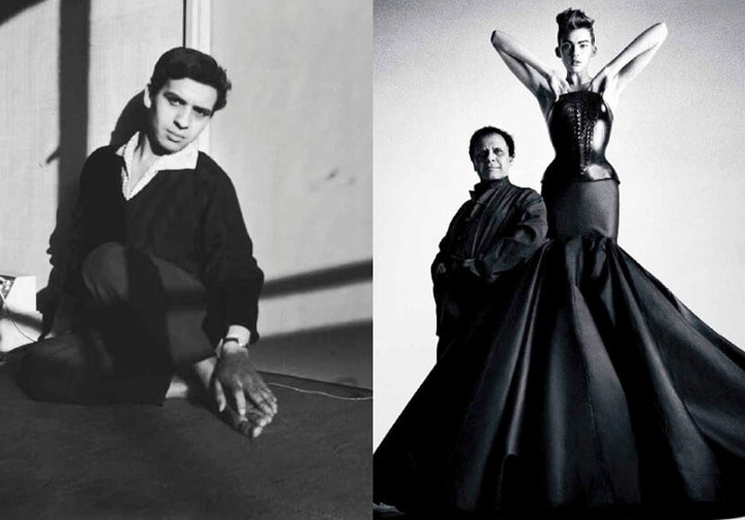

<!DOCTYPE html>
<html>
<head lang="en">
    <meta http-equiv="Content-Type" content="text/html; charset=utf-8">
    <title>阿莱亚ALAIA-传奇人生</title>
    <meta name="viewport" content="width=device-width, initial-scale=1, maximum-scale=1, user-scalable=no, minimal-ui" >
    <meta name="msapplication-tap-highlight" content="no">
    <meta name="apple-mobile-web-app-capable" content="yes">
    <link rel="stylesheet" type="text/css" href="css/screen.css?v=1.0"/>
    <script>
        var _hmt = _hmt || [];
        (function() {
            var hm = document.createElement("script");
            hm.src = "//hm.baidu.com/hm.js?1257181ffc5c8d308d6d34578b417ee2";
            var s = document.getElementsByTagName("script")[0];
            s.parentNode.insertBefore(hm, s);
        })();
    </script>
</head>
<body>
<!---->
<div class="wrapper page-historicalmoments">
    <h2 class="title">
        巅峰时刻
    </h2>
    <div class="content">
        
        <p>阿泽丁·阿莱亚Azzedine Alaïa出生于突尼斯。来到巴黎之前，他在突尼斯美术学院学习雕塑。
            在克丽斯汀·迪奥（Christian Dior）工作室短暂的积累经验之后，他在rue de Bellechasse创立了自己的工作室。他的客户名单星光璀璨， 其中包括Cécile de Rothschild, Louise de Vilmorin, Bettina Graziani, Greta Garbo 和 Arletty.
            <br><br>
        </p>
        
        <p>
            1985年，他获得两项由法国文化部颁发的时尚奥斯卡大奖。同年，他的首场展览亮相波尔多现代艺术博物馆，并与丹·弗拉文的雕塑作品同时展出。
            <br><br>
            1985年，他在纽约Palladium的时装秀震动了时尚圈。“超级模特”们因由他而被发掘，而她们也成为阿莱亚忠实的朋友与追随者。
            <br><br>
            1989年，他为杰西·诺曼在法国大革命200周年盛大集会上的表演设计服装
            <br><br>
        </p>
        
        <p>
            1998年，他出版了第一本书。 
            <br><br>
            2002年，他创立了阿莱亚基金会，用于存储与归档他的作品与私人收藏，以期许有一天能够向公众与学生开放。此外他一直保持与世界各地享有盛名的当代艺术博物馆良好的合作关系。
            <br><br>
            2015年，他推出了首款香水，命名为Alaïa Paris。
            <br><br>
        </p>
        
    </div>
</div>
<!-- legend-->
<div class="wrapper page-fragrance page-legend">
    <h2 class="title">
        传奇
    </h2>
    <div class="content-fragrance">
        
        <div class="phase-1 brown-font">
            “何谓时尚，我毫不在乎。我所钟情的，只是服装”。
        </div>
        <div class="content">
            <p class="l1">
                阿泽丁·阿莱亚Azzedine Alaïa不同于其他时装设计师、艺术总监或知名人物，他不喜交际，唯痴迷于工艺劳作。他将面料视为另一层肌肤，寻求凸显或遮蔽体态的美感。不臻完美，绝不罢休。
            </p>
            
            <p class="l1">阿泽丁·阿莱亚Azzedine Alaïa一向以行事低调闻名。他希望充分尊重辛勤付出的团队，仅在时装秀结束时短暂登场致意。他敢于超越时尚世界的流行趋势，从不随波逐流。</p>
        </div>
    </div>
</div>
<div class="wrapper wrapper-3">
    <h2 class="title">
        灵感
    </h2>
    <div class="inspiration inspiration-1">
        
        <p class="des">
            没有女性，就没有他的存在。正如他曾真挚告白：“我的一切都是拜女性所赐。”
            他的祖母、姐姐，以及每一位引导他从雕塑家化身高级定制时装设计师的女性们。更不用说那些成为挚友和拥趸的超级名模
            ——Stephanie Seymour、Linda Spiring、
            Naomi Campbell、Linda Evangelista、
            Veronica Webb 和Jasmine le Bon……
            当然也不能忘记他的另一位姐姐Carla Sozzani。
        </p>
    </div>
    <div class="inspiration inspiration-2">
        
        <p class="des">
            电影、非洲艺术、埃及艺术品、古典与现代雕塑等收藏品都是他的激情所在，更是灵感源泉。
        </p>
    </div>
</div>
</body>
</html>